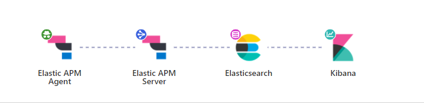
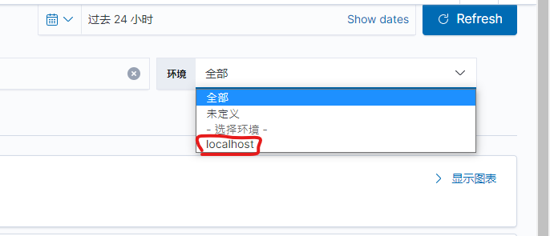
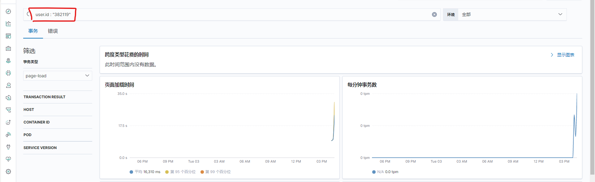
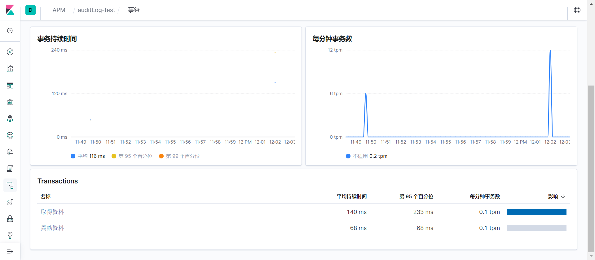
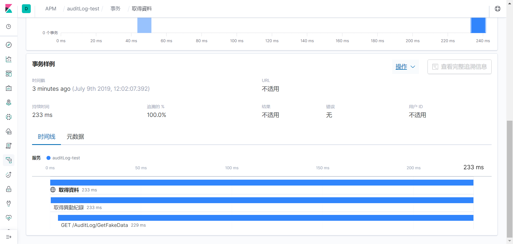

網站效能的監控，類似微軟的 application insights，但是微軟的要錢，自己架的不用，而且需要看甚麼就自己寫，換個方向想其實也比較方便
APM 的全名是 application performance management，而 RUM 則是 real user monitoring，RUM 直接從用戶端的瀏覽器崁入一些 js 指令收集數據，我自己的理解是 RUM 是類似 Chrome 開發者工具那樣，只是將數據保存在某個地方，便於之後查看，而 APM 則是將使用者的操作，後端的處理經過哪些指令，呼叫了那些第三方服務，這些等等的數據也記錄下來，然後可以透過一些視覺化的方式事後去監控網站前端與後端的效能。
對網站維運及除錯是蠻有幫助的…….只是 Log 的點要埋的對就是了，下面的步驟都只是初學的一些步驟及心得，不一定是正確的，參考請注意。
架構

架構如上，網頁加入apm-agent-rum-js ，傳遞給apm-server，再發送給elasticSearch，最後透過kibana觀看數據
環境建立 基本上就是透過 docker 建立所需要的東西，這部分請參考我自己練習的docker-compose ，當然我也是改自deviantony/docker-elk 的Elastic stack (ELK) on Docker，有興趣的人可以了解一下
apm-server 啟用 APM-server RUM 功能 APM-server 依賴elasticSearch，此處須設定 ES 的主機位置
1 2 3 4 5 6 7 8 9 10 11 12 apm-server.host: 'localhost:8200' output.elasticsearch.hosts: ['http://yourLocaldomain:9200'] apm-server.rum.enabled: true apm-server.rum.event_rate.limit: 300 apm-server.rum.event_rate.lru_size: 1000 apm-server.rum.allow_origins: ['*'] apm-server.rum.library_pattern: 'node_modules|bower_components|~' apm-server.rum.exclude_from_grouping: '^/webpack' apm-server.rum.source_mapping.cache.expiration: 5 m apm-server.rum.source_mapping.index_pattern: 'apm-*-sourcemap*'
設置 CORS 解決 CORS 及 APM 追蹤的問題，須加上 header，此處為了測試僅在web.config進行設置全部開放，實務上應針對個別的 API 進行設定
1 2 3 4 5 6 7 8 9 10 <system.webServer > <httpProtocol > <customHeaders > <add name ="Access-Control-Allow-Origin" value ="*" /> <add name ="Access-Control-Allow-Headers" value ="Content-Type, elastic-apm-traceparent" /> <add name ="Access-Control-Request-Method" value ="GET, OPTIONS, POST" /> <remove name ="X-Powered-By" /> </customHeaders > </httpProtocol > ...
apm-agent client 端範例 如果想看文件的話可以參考此處 ，取得 GitHub 或是 UNPKG 的 js 並於專案中引用載入，記得elastic-apm-rum.umd.js要先加入至專案
基本上只要在共用頁面_Layout.cshtml裡面埋這段 Code 就好了
1 2 3 4 5 6 7 8 9 10 11 <script src="~/Scripts/Plugins/elastic-apm-rum.umd.js" crossorigin></script > <script> elasticApm.init({ serviceName: 'mySite-FE' , serverUrl: 'http://localhost:8200' , active: true , instrument: true , disableInstrumentations:['eventtarget' ], environment: 'localhost' }) </script>
因為有設定environment，所以可以切換環境

文件請參考agent API ，以及init 設定
例如加入使用者資訊，就可以透過user.id : "382119"來篩選資料，或是透過user.name : "art"以人名篩選
1 2 3 4 elasticApm.setUserContext({ id: @AuthorizeManagement.CurrentUser.Id, username: '@AuthorizeManagement.CurrentUser.Name' })

自行撰寫事件 如果套件自行建立的資料不符合需求，也可以選擇自己寫事件，下面是一個範例
1 2 3 4 5 6 7 8 9 10 11 12 13 14 15 16 17 18 19 20 21 22 23 24 25 26 27 28 29 30 31 32 33 34 35 36 37 38 39 40 41 42 43 44 45 46 47 48 49 50 51 52 53 54 55 <h2 > 會員資料異動模擬</h2 > <div id ="app" > <form > <label for ="phone" > 電話</label > <input type ="text" v-model ="form.phone" /> <label for ="name" > 姓名</label > <input type ="text" v-model ="form.name" /> </form > <button @@click ="insAuditLog" > 修改</button > <button @@click ="getAuditLog" > refresh</button > <span > 共 {{ recordCount }} 筆異動紀錄</span > <table class ="table table-bordered table-sm" > <thead > <tr > <th > #</th > <th > 異動紀錄</th > </tr > </thead > <tbody > <tr v-for ="(record,index) in records" > <td > {{ index + 1}}</td > <td > <table class ="table table-bordered table-sm" > <thead > <tr > <th > #</th > <th > 異動欄位</th > <th > 異動前</th > <th > 異動後</th > <th > 異動日期</th > <th > 異動人員</th > </tr > </thead > <tbody > <tr v-for ="(content,index) in record._source.content" > <td > {{ index+1 }}</td > <td > {{ content.field }}</td > <td > {{ content.valueBefore }}</td > <td > {{ content.valueAfter }}</td > <td > {{ record._source.modifiedDate }}</td > <td > {{ record._source.modifiedBy }}</td > </tr > </tbody > </table > </td > </tr > </tbody > </table > </div > @section scripts{ <script src ="~/Scripts/Page/AuditLog/Index.js" > </script > }
基本上就是在初始化的時候宣告pageLoadSampled，跟 server 說我要自己定義事件了，你不用幫我用預設的事件了，所以後續就自行撰寫startTransaction()還有startSpan()了，這個部份我沒有太深入研究，暫時對我來說基本的夠用了
1 2 3 4 5 6 7 8 9 10 11 12 13 14 15 16 17 18 19 20 21 22 23 24 25 26 27 28 29 30 31 32 33 34 35 36 37 38 39 40 41 42 43 44 45 46 47 48 49 50 51 52 53 54 55 56 57 58 59 60 61 62 63 64 65 66 67 const SERVER_URL = 'http://localhost:8898/' ;const vm = new Vue({ el: '#app' , data: { records: null , form: { phone: null , name: null , }, }, mounted() { elasticApm.init({ serviceName: 'mySite-FE' , serverUrl: 'http://localhost:8200' , pageLoadSampled: true , }); this .getAuditLog(); }, methods: { checkForm() { for (const key in this .form) { if (this .form.hasOwnProperty(key)) { const element = this .form[key]; if (element) return true ; } } return false ; }, getAuditLog() { var transaction = elasticApm.startTransaction('取得資料' , 'custom' ); var httpSpan = transaction.startSpan('取得異動紀錄' , 'http' ); var vm = this ; $.ajax({ url: '/AuditLog/GetFakeData' , }).done(function (res ) if (res.hits && res.hits.hits) vm.records = res.hits.hits; httpSpan.end(); if (transaction) transaction.end(); }); }, insAuditLog() { var transaction = elasticApm.startTransaction('異動資料' , 'custom' ); if (this .checkForm() === false ) { console .log('plz input data in form' ); return ; } var httpSpan = transaction.startSpan('新增異動紀錄' , 'http' ); var vm = this ; $.ajax({ url: '/AuditLog/InsFakeData' , data: { ...vm.form }, type: 'POST' , }).done(function (res ) console .log(res); httpSpan.end(); if (transaction) transaction.end(); }); }, }, computed: { recordCount() { return this .records ? this .records.length : 0 ; }, }, });
Kibana - APM 大概結果就像是這樣，自訂的事件已經會被記錄下來


參考連結 APM Real User Monitoring JavaScript Agent Reference Custom Transaction Transaction API